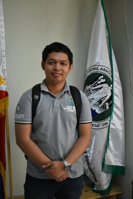
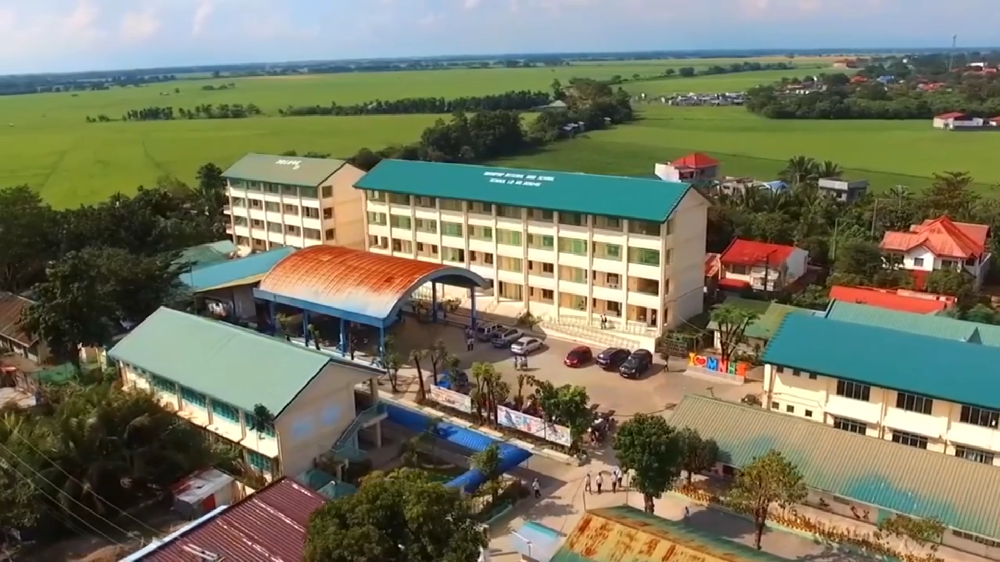
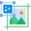

CONTENTS

About me
Greetings!
Please call me June, a passionate chemist turned skilled programmer specializing in Python and Bash.
I have a profound interest in computational modeling and molecular dynamics, with a particular focus on utilizing the GROMACS software.
As a chemist, I have spent considerable time conducting research, analyzing complex data, and solving intricate problems. This experience has honed my analytical thinking, attention to detail, and ability to work meticulously. It has also instilled in me a deep appreciation for the scientific method and the pursuit of knowledge.
My journey into programming began as a means to enhance my research capabilities in the field of chemistry. I quickly discovered the power of coding to automate processes, analyze large datasets, and create visualizations that elucidate complex scientific concepts. Python and Bash have become my primary tools for developing efficient and effective solutions.
Within the realm of computational modeling and molecular dynamics, I have focused on harnessing the capabilities of GROMACS. Through the integration of Python and Bash scripting, I have developed robust pipelines and workflows that facilitate simulations, analyze molecular structures, and extract meaningful insights from vast amounts of data.
I thrive in collaborative environments, where I can leverage my interdisciplinary expertise to contribute to cutting-edge projects.
Whether it's developing algorithms, optimizing simulations, or creating user-friendly interfaces for data analysis, I relish the opportunity to apply my programming skills to tackle real-world challenges in the realm of computational chemistry.
In addition to my technical prowess, I place great value on effective communication and teamwork. I understand the significance of clear and concise explanations, whether presenting research findings to colleagues or collaborating closely with developers. My experience as a chemist has taught me the importance of teamwork and the impact of collective efforts in achieving remarkable outcomes.
As I continue to grow as a chemist-turned-programmer, my goal is to bridge the gap between scientific research and technological innovation. I am enthusiastic about leveraging my unique skill set to contribute to advancements in areas such as computational modeling, molecular dynamics, and data analysis.
I am excited to connect with fellow enthusiasts who share my passion for programming, computational chemistry, and pushing the boundaries of scientific knowledge. Let's collaborate and explore the vast possibilities where Python, Bash, and GROMACS converge to shape a brighter future.
If you have any questions or would like to discuss potential collaborations, please don't hesitate to reach out. I'm always eager to engage in stimulating conversations and take on challenging projects!
JAS =)
Education

Secondary
Mayapyap National HS
High School
Education
2008 - 2012
Undergraduate
Nueva Ecija University of S&T
Bachelor of Science in Chemistry
2012 - 2016
Graduate
Adamson University
Master of Science in Chemistry
2019 - Present
My Career Timeline
2016
Post Undergraduate Timeline
- April - Graduated from BS Chemistry Program
- October - Passed the PRC Chemist Licensure Examination
2017 - 2018
Professional Career
- January, 2017 - worked at CRL Environmental Corporation as CHEMIST I
- February, 2018 - left CRL Environmental Corporation
- August, 2018 - applied to NEUST as INSTRUCTOR
2019 - 2021
Graduate School Journey
- April, 2019 - applied on MS Chemistry Program at Adamson University
- May, 2021 - applied on Data Science MOOC Program at Project SPARTA
- December, 2021 - left instructor job at NEUST
2022 - 2023
Graduate School Journey (continued) and Research Immersion
- August, 2022 - applied as Research Assistant (CoS) on a DOST funder research project at NEUST
Achievements/ Milestones
Academic Honors
- Batch Valedictorian / Salutatorian - Elementary and High School Level Respectively
- College Level Leadership and Special Awards Recipient
Scholarships Received
- Department of Science and Technology - SEI Scholar thru Republic Act 7687
- Project SPARTA Scholarship - Data Science path
- Philippine National Police Scholarship Grant
Achievements
- Civil Service Professional Eligibility (2014)
- Licensed Chemist (2016)
Other Milestones
- Representative in national organizations such as PACS and PSC (undergraduate)
- Immersions in various scientific research projects
- Former technical designations recipient such as Unit Head of Center for Environmental Research, NEUST
- International Publications (SCOPUS and WoS)
Others
Personal Skills
Multimedia Editing
I have been editing videos and images since I was 12. I learned multimedia skills in school and took on design and editing commissions. I also directed small films and movies and gained recognition for my work. I have honed my craft for almost 10 years now and still improving it with current technologies that we have.
Programming
Programming is my passion. In just 2 years, I have built a portfolio of data science projects, complex applications and modelling researches. I started with Python and then learned Bash for Linux automation and front-end development with JS and HTML/CSS.
Music
Music is another love of mine. I play guitar and sing since Grade 5. I joined music-related groups in high school, such as Rondalla, Drum and Lyre Band, and Choir. I still enjoy these activities but abstain performing in public.
Gaming
Good ol gaming. My first gaming experience was with an old SNES device that my parents bought us. It then led to a variety of games like MMORPG, Dota, Genshin Impact, first-person shooters, and other triple A titles. I still play today but not too often.